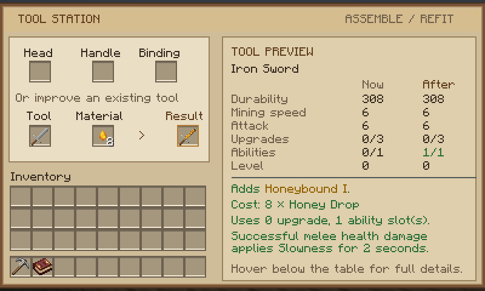
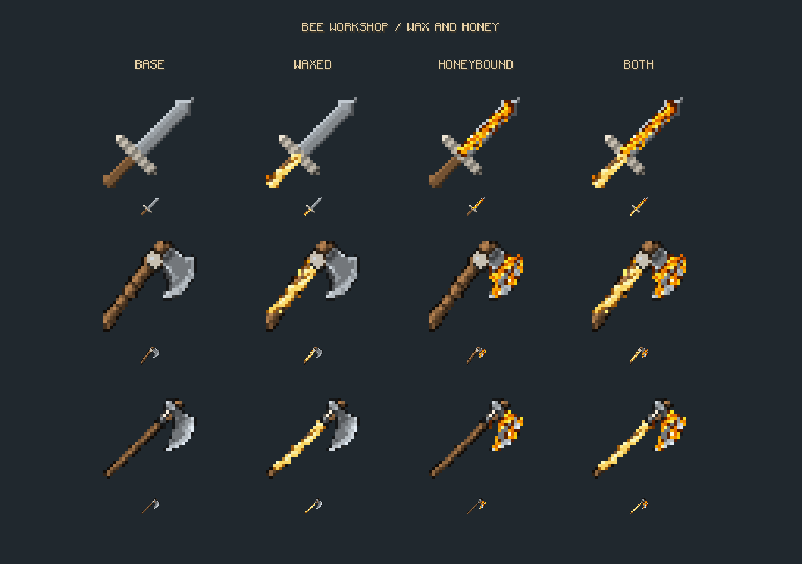

Waxed
Ingredients
8 per level, in any mix: vanilla Honeycomb, Forestry Beeswax or Productive Bees Wax.
Each level uses one upgrade slot. Up to level III.
Effect
Each level prevents 10% of remaining wear. It stacks with Reinforced and material traits, but total protection is capped at 90%.
Honeybound
Ingredients
8 per level, in any mix: vanilla Honey Bottles or Forestry Honey Drops. Bottles give you the glass back.
Each level uses one ability slot. Up to level II. Swords, axes and broad axes.
Effect
Melee hits that deal real health damage apply Slowness for 2 seconds, with strength equal to the level. One-second shared cooldown. Players aren't affected by default, and absorbed or blocked hits don't trigger it.
Fits your pack
Config
serverconfig/wt_beeblock_workshop-server.toml controls max levels, wax protection, honey duration, cooldown and PvP. Max level 0 turns a modifier off without wiping existing tools.
Ingredient tags
wt_beeblock_workshop:wax and wt_beeblock_workshop:honey. Forestry and Productive Bees entries are optional and simply ignored when those mods aren't installed.
Install: WT Workshop 0.7.x plus this addon, on client and server. The addon source lives in beeblock-addon/ and is the worked example for the addon API.